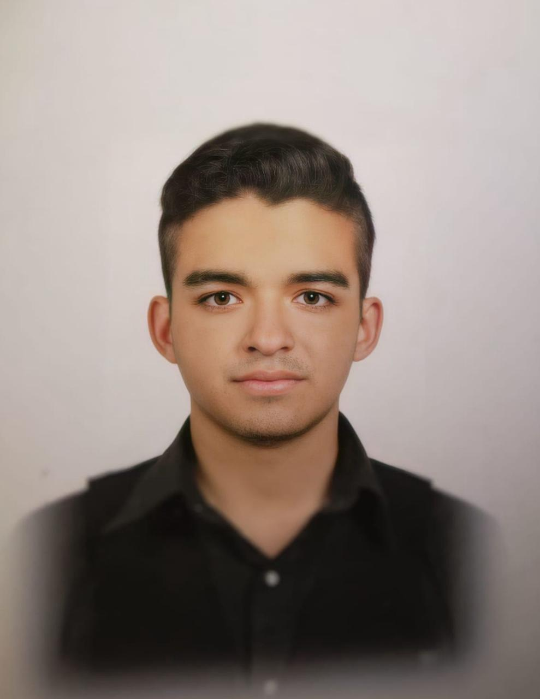

TECNICO INSTALADOR - IZZI
2021 - 2022
- Instalacion de redes domesticas
TECNICO EN INFORMATICA
Técnico informático con más de 1 año de experiencia en la instalación y mantenimiento de software, analista en redes e instalación de las redes domésticas. En busca de nuevos retos profesionales para adquirir mayor experiencia, aumentando la eficiencia en las actividades que me son asignadas y aportar al crecimiento de la empresa con mis habilidades y dedicación.
2021 - 2022
2022 - 2024
Centro de Estudios Cientificos y Tecnologicos No 12. Jose Maria Morelos, 2015 - 2018
Escuela Superior de Computo
Email: id634296@gmail.com
Telefono: 5514878607
Dirección: Calle Hacienda las Ninfas, 3B, Fracc. Hacienda Real, Tultepec, Edo de México.